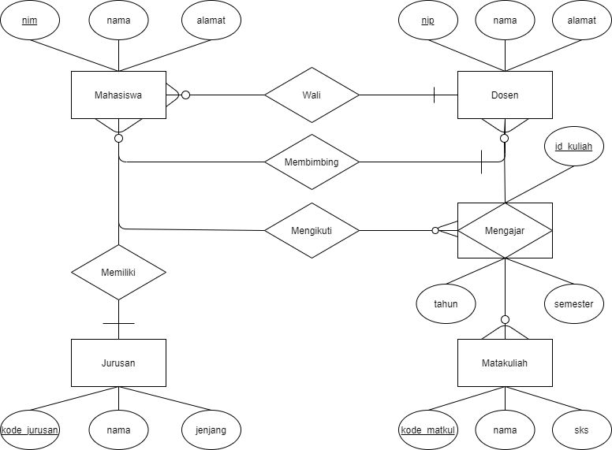

Dalam dunia basis data, konsep Entity Relationship Diagram (ERD) adalah alat penting yang digunakan untuk merancang struktur basis data secara visual. ERD membantu menggambarkan hubungan antar entitas, atribut, dan relasi dalam sistem. Berikut adalah elemen-elemen penting dalam ERD.
Entitas adalah objek nyata atau konsep yang dapat dibedakan secara unik dalam suatu domain atau sistem. Dalam basis data, entitas adalah sesuatu yang ingin kita simpan datanya. Contoh entitas dalam sistem universitas adalah Mahasiswa, Dosen, dan Mata Kuliah.
Atribut adalah properti atau karakteristik yang menjelaskan suatu entitas. Atribut memberikan rincian tentang entitas, seperti NIM, Nama, atau Tanggal Lahir untuk entitas Mahasiswa.
Relasi menggambarkan hubungan antara dua atau lebih entitas. Misalnya, relasi Mengambil antara entitas Mahasiswa dan Mata Kuliah, yang menggambarkan bahwa seorang mahasiswa dapat mengambil beberapa mata kuliah.
Berikut adalah contoh visual dari diagram ERD:
